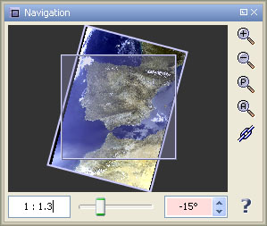
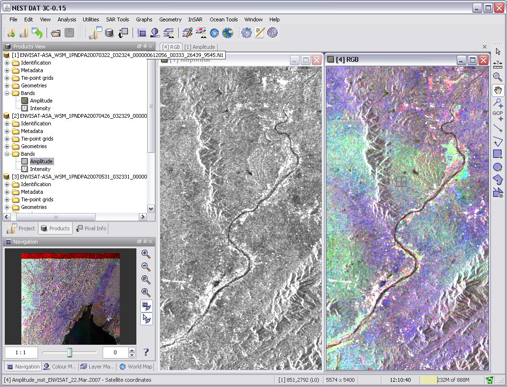

| The Navigation Window | |
The Navigation Window is used to move the viewport of an image view, to zoom in and out of it and to rotate the image in steps of 5 degrees using the spinner control below the image preview. The current viewport is depicted by a semi-transparent rectangle which can be dragged in order to move the viewport to another location. It also provides a slider used to zoom in and out of the view:

The text box at the left side of slider can be used to adjust the zoom factor manually.
You can enter decimal value which sets the zoom factor of the view to this value.
Also you can enter the zoom factor in the same format as it is displayed.
The Navigation window additionally provides the following features via its tool buttons:
A click on the Zoom-In-Tool will increase the magnification of the image in discrete steps, centered on the image view. The result will be displayed instantly and the magnification value will be refreshed.
A click on the Zoom-Out-Tool will decrease the magnification of the image in discrete steps, centered on the image view. The result will be displayed instantly and the magnification value will be refreshed.
A click on the Zoom-All-Tool will adjust the magnification so
that the whole image fits into the image
view. The result will be displayed instantly and the
magnification value in the editor will be refreshed. The same effect
can be achieved by clicking on the  icon in
the lower right corner of the image view.
icon in
the lower right corner of the image view.
The following image shows DAT with six image views that have been arranged with the "Tile Evenly" command in the Window Menu. When the Synchronise-Button is pressed, all available tools of the Navigation Window operate on all open image views.
As a result,
